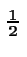
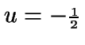
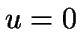

1. Introduction
There are many problems in mathematics which are
concerned with both evaluating and understanding discrete sums. It
is my intention to introduce some mathematical tools to help
investigate such problems, to save us from approaching each
problem from first principles.
In the past, people have considered the application of Discrete Calculus to be limited to problems in computation, numerical methods and the study of sequences. I fervently believe that this is a serious underestimation. I hope to introduce the reader to some surprising results.
But first, let's start with an example.
1.1 The Chessboard problem
Consider a regular chessboard, with eight by eight squares. The
question is, how many squares are there in total?
The answer is there are 204. Why is this?
Let's start by considering the biggest square present, the perimeter of the board. Clearly there is only one square present of this size.
Logically, the next size square to consider is the next largest, 7 by 7. By just considering the possible places where the bottom left corner of the square can go, we see that there are four such squares on the board.

With each iteration of square size, we see that the possible
positions to put the bottom left corner of the considered square
itself forms a square grid of points, the size of this square
being  by
by  .
.
We finish the iteration when we reach the fact that there are 64 one by one squares on the board, since no smaller squares exist.
Let's denote the total number of squares by  . We now know
that
. We now know
that
And this is when we reach the crunch point! This quantity can be interpreted geometrically as the area represented in Figure 1.2.

Since the width of each strip is 1, the total area is numerically equal to the sum of the heights of the strips, i.e. .
As can be seen, the considered area looks somewhat similar to the integral of evaluated between 0 and 8 (which is ). However, the area of the Discrete integral is larger than the area of the continuous integral.
Take a look at Figure 1.3.

Here we again see that the area of the strips is equal to . However, this time we have an alternative construction. The curve is the same (), however this time we have used left-sided strips, and our Discrete integral is now somewhat similar to the integral of evaluated between 1 and 9. Also note that this time the Discrete integral is numerically less than its continuous analogue (which is 243).

Common sense says that we should now make a decision. We must surely choose which type of construction we wish to be concerned with, and ignore the other. But which do we choose?
Well perhaps it would make sense to choose neither, but instead consider a third type of integral, a centered one, as represented in Figure 1.5.

This time we have a more `independent' construction, one which favors neither left nor right. This time the Discrete Integral is much closer in value to the Continuous Integral evaluated over the same range. The Continuous Integral of between  and is . So it seems that this is a much better `unbiased' choice of construction.
Well I am still not completely happy with this choice. In some scenarios it might be convenient to choose one of the former two constructions in preference to this `centered' type. Well there is a solution which turns out to be very powerful. This is to have a variable type, one which allows for an arbitrary offset, including the three pre-mentioned types.
After many choices of notation, the most sensible choice seemed to
be to slightly modify the notation of Continuous Calculus to
contain two additional parameters (the width of the strip and the
offset described above). In this notation, a left-sided integral
is one where
, centered when  and right-sided
when
 . This is because
. This is because  represents the offset
from the center of the strip in multiples of
represents the offset
from the center of the strip in multiples of  , the width of
the strips.
, the width of
the strips.
So the quantity we are calculating turns out to be precisely
It can be shown that
Here are a few of the trivial results that one should expect from
this formula. This is by no means an exhaustive list of such
results, merely a demonstration of a few.
As the width of the strips decreases, the area represented by the strips closer approximates the value of the integral. Hence (1.3). (1.4) follows from (1.1) and finally, (1.5) makes sense when you consider that this integral represents there being one strip of width 8 and with height since this is the value of the function at .
It is possible to rewrite (1.2) in a simpler form:
| (1.6) |
This makes sense when you consider that if a function to be integrated is to be offset by , it does not have to be expressed by the , but it could be offset in the function itself, and a centered integral ( ) could be used instead.
© Pete Moore April 2001